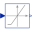

ValveCompressibleValve for compressible fluids, accounts for choked flow conditions |
Diagram
{kind=link}
Information
This information is part of the Modelica Standard Library maintained by the Modelica Association.
Valve model according to the IEC 534/ISA S.75 standards for valve sizing, compressible fluid, no phase change, also covering choked-flow conditions.
The parameters of this model are explained in detail in PartialValve (the base model for valves).
This model can be used with gases and vapours, with arbitrary pressure ratio between inlet and outlet.
The product Fk*xt is given by the parameter Fxt_full, and is assumed constant by default. The relative change (per unit) of the xt coefficient with the valve opening can be specified by replacing the xtCharacteristic function.
If checkValve is false, the valve supports reverse flow, with a symmetric flow characteristic curve. Otherwise, reverse flow is stopped (check valve behaviour).
The treatment of parameters Kv and Cv is explained in detail in the User's Guide.
Parameters (21)
| allowFlowReversal |
Value: system.allowFlowReversal Type: Boolean Description: = true to allow flow reversal, false restricts to design direction (port_a -> port_b) |
|---|---|
| dp_start |
Value: dp_nominal Type: AbsolutePressure (Pa) Description: Guess value of dp = port_a.p - port_b.p |
| m_flow_start |
Value: m_flow_nominal Type: MassFlowRate (kg/s) Description: Guess value of m_flow = port_a.m_flow |
| m_flow_small |
Value: if system.use_eps_Re then system.eps_m_flow * m_flow_nominal else system.m_flow_small Type: MassFlowRate (kg/s) Description: Small mass flow rate for regularization of zero flow |
| show_T |
Value: true Type: Boolean Description: = true, if temperatures at port_a and port_b are computed |
| show_V_flow |
Value: true Type: Boolean Description: = true, if volume flow rate at inflowing port is computed |
| CvData |
Value: Modelica.Fluid.Types.CvTypes.OpPoint Type: CvTypes Description: Selection of flow coefficient |
| Av |
Value: Type: Area (m²) Description: Av (metric) flow coefficient |
| Kv |
Value: 0 Type: Real Description: Kv (metric) flow coefficient [m3/h] |
| Cv |
Value: 0 Type: Real Description: Cv (US) flow coefficient [USG/min] |
| dp_nominal |
Value: Type: Pressure (Pa) Description: Nominal pressure drop |
| m_flow_nominal |
Value: Type: MassFlowRate (kg/s) Description: Nominal mass flowrate |
| rho_nominal |
Value: Medium.density_pTX(Medium.p_default, Medium.T_default, Medium.X_default) Type: Density (kg/m³) Description: Nominal inlet density |
| opening_nominal |
Value: 1 Type: Real Description: Nominal opening |
| filteredOpening |
Value: false Type: Boolean Description: = true, if opening is filtered with a 2nd order CriticalDamping filter |
| riseTime |
Value: 1 Type: Time (s) Description: Rise time of the filter (time to reach 99.6 % of an opening step) |
| leakageOpening |
Value: 1e-3 Type: Real Description: The opening signal is limited by leakageOpening (to improve the numerics) |
| checkValve |
Value: false Type: Boolean Description: Reverse flow stopped |
| p_nominal |
Value: Type: AbsolutePressure (Pa) Description: Nominal inlet pressure |
| Fxt_full |
Value: 0.5 Type: Real Description: Fk*xt critical ratio at full opening |
| use_Re |
Value: system.use_eps_Re Type: Boolean Description: = true, if turbulent region is defined by Re, otherwise by m_flow_small |
Connectors (4)
| port_a |
Type: FluidPort_a Description: Fluid connector a (positive design flow direction is from port_a to port_b) |
|
|---|---|---|
| port_b |
Type: FluidPort_b Description: Fluid connector b (positive design flow direction is from port_a to port_b) |
|
| opening |
Type: RealInput Description: Valve position in the range 0..1 |
|
| opening_filtered |
Type: RealOutput Description: Filtered valve position in the range 0..1 |
Components (5)
| system |
Type: System Description: System wide properties |
|
|---|---|---|
| state_a |
Type: ThermodynamicState Description: state for medium inflowing through port_a |
|
| state_b |
Type: ThermodynamicState Description: state for medium inflowing through port_b |
|
| filter |
Type: Filter |
|
|  | minLimiter |
Type: MinLimiter |